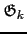
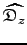
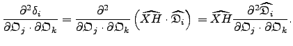
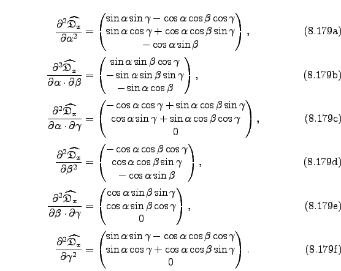

Next: Spheroidal dot product derivatives Up: Ellipsoidal dot product derivatives Previous: The dot product gradient Contents Index
The second partial derivative of the dot product with respect to the orientational parameters and  is
|  | (theparentequation.179) |
The second partial derivatives of the unit vector with respect to the Euler angles are
The second partial derivatives of the unit vector with respect to the Euler angles are
|  |
The second partial derivatives of the unit vector with respect to the Euler angles are
|  |
Edward d'Auvergne 2008-08-09